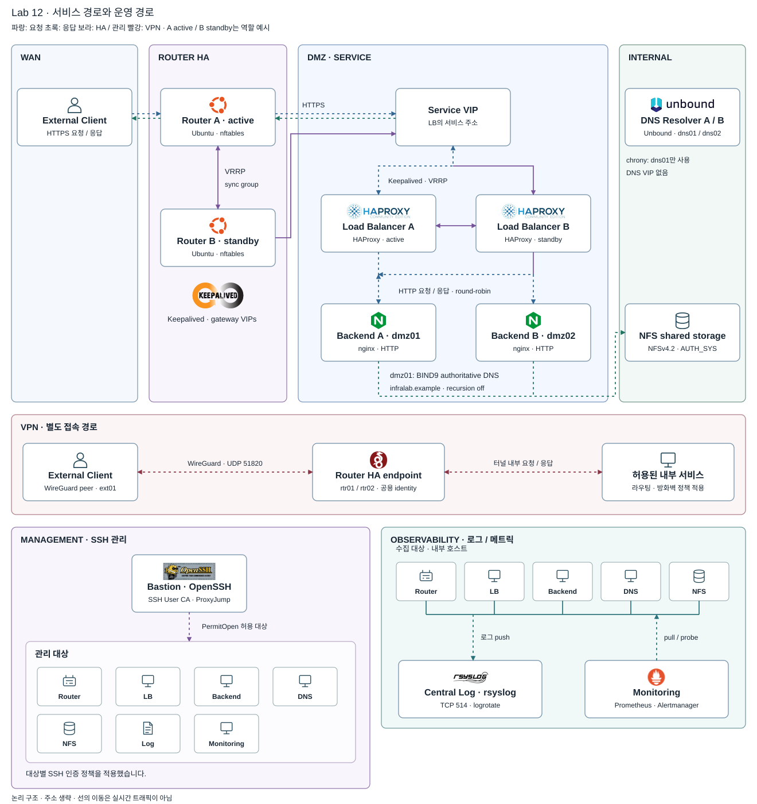

← 인프라 실습 목록Agent-assisted Learning Lab Series
Infrastructure Fundamentals & Operations Lab Series
Linux 네트워크부터 이중화·감시·장애 복구까지 실습한 기록입니다.
Routing/NAT에서 보안 경계, DNS·VPN, LB·HA·TLS, 관리 접근, 공유 스토리지, 로그·감시로 이어지는 인프라 실습입니다.
각 단계의 구성과 장애 주입·복구 기록을 함께 정리했습니다.
실제 서비스 운영이 아닌 Lab 환경입니다.
12 단계별 Lab5 학습 단계장애 주입 → 관측 → 복구
01 / 전체 구조
서비스 연결, 관리 접근, 로그·감시를 실습했습니다.
서비스 요청은 라우터와 로드 밸런서를 거쳐 backend로 전달됩니다. 관리 접속은 Bastion을 통하고, 로그 수집과 상태 감시는 별도 서버가 맡습니다. 아래는 마지막 Lab까지 구성한 환경을 역할별로 정리한 구조도입니다.

- 서비스 — Client → Router → Service VIP → LB → Backend
- 관리 — Bastion → 허용된 관리 대상
- 관측 — 로그는 수집기로 push, 메트릭은 감시 서버가 pull
DNS는 client가 두 resolver를 직접 사용합니다. DNS VIP는 없습니다.
02 / 학습 흐름
구성한 항목과 확인한 장애
라우팅과 방화벽부터 시작해 DNS·VPN, 이중화, 관리 접근, 로그·감시를 차례로 구성한 기록입니다.
항목을 펼치면 구성 내용과 실제로 발생한 장애, 직접 확인할 내용을 볼 수 있습니다.
Foundation라우팅·방화벽·이름 해석·원격 접속
01Linux Routing & NATLinux 라우터와 NAT를 구성하고, 패킷 경로와 주소 변환을 확인하는 실습입니다.
- 기술 구성
- Linux router에 SNAT·DNAT과 stateful forwarding을 구성했습니다. 라우팅, 주소 변환, 연결 추적을 나눠 확인한 Lab입니다.
- 기록된 대표 장애
- IP forwarding을 끄자 router 자체는 정상이지만 경유 연결이 모두 멈췄습니다. 원인은 forwarding 비활성화로 확인됐습니다.
- 사용자 검증 항목
- 요청과 응답의 경로, conntrack의 두 tuple과 NAT counter를 설명·확인합니다.
기술 검증 승인 · 개인 검증 상태 확인
02DMZ & Stateful FirewallDMZ와 방화벽을 구성하고, 구역별 연결 허용·차단을 확인하는 실습입니다.
- 기술 구성
- WAN·DMZ·INTERNAL·MANAGEMENT를 나누고 기본 차단 정책을 구성했습니다. NAT와 허용·차단 규칙을 별도로 검증했습니다.
- 기록된 대표 장애
- 넓은 허용 규칙이 좁은 차단 규칙보다 먼저 평가돼, 막혀야 할 연결이 열렸습니다.
- 사용자 검증 항목
- 정책 매트릭스의 허용과 차단을 규칙 순서·연결 상태에 연결해 설명합니다.
기술 검증 승인 · 개인 검증 상태 확인
03DNS InfrastructureDNS 서버를 구성하고, 이름 해석 과정과 조회 실패 원인을 확인하는 실습입니다.
- 기술 구성
- 내부 recursive resolver와 DMZ authoritative DNS를 분리했습니다. split-horizon과 cache, UDP·TCP 질의를 비교했습니다.
- 기록된 대표 장애
- zone 파일 오타로 이름은 정상 해석됐지만 잘못된 주소를 반환했습니다.
- 사용자 검증 항목
- resolver와 authoritative 응답, TTL과 시스템 이름 해석 경로를 구분합니다.
기술 검증 승인 · 개인 검증 상태 확인
04WireGuard VPNWireGuard 터널을 구성하고, 내부 서비스 접근과 응답 경로를 확인하는 실습입니다.
- 기술 구성
- 원격 client와 router 사이에 암호화된 터널을 구성했습니다. 내부 DNS와 API 접근은 방화벽 정책으로 따로 제한했습니다.
- 기록된 대표 장애
- AllowedIPs에서 내부 대역이 빠져 route가 남아 있어도 내부 API·DNS가 timeout됐습니다.
- 사용자 검증 항목
- underlay·overlay, AllowedIPs·route, 응답 경로를 나눠 확인합니다.
기술 검증 승인 · 개인 검증 상태 확인
Traffic / Availability로드 밸런싱·이중화·TLS
05HAProxy Load BalancingHAProxy를 구성하고, 요청 분산과 backend 상태 검사를 확인하는 실습입니다.
- 기술 구성
- HAProxy L7 분산과 HTTP health check를 구성했습니다. 요청을 client·LB·backend 로그로 이어 보고 X-Forwarded-For를 확인했습니다.
- 기록된 대표 장애
- 사용자 경로는 정상이지만 health check 경로가 잘못돼 backend가 DOWN 처리됐습니다.
- 사용자 검증 항목
- 사용자 요청 경로와 상태 검사 경로를 비교하고 backend 중단 후 복구를 확인합니다.
기술 검증 승인 · 개인 검증 상태 확인
06Keepalived + HAProxy HA두 로드 밸런서를 이중화하고, 장애 시 VIP 인계와 연결 변화를 확인하는 실습입니다.
- 기술 구성
- LB 두 대가 Service VIP를 인계하도록 구성했습니다. VRRP·GARP·track script와 기존 연결의 변화를 확인했습니다.
- 기록된 대표 장애
- VRRP 식별자가 서로 달라도 서비스는 정상처럼 보일 수 있었습니다. 설정 불일치를 장애 주입으로 확인했습니다.
- 사용자 검증 항목
- VIP 소유자와 ARP 갱신, 기존 연결과 새 연결의 차이를 설명합니다.
기술 검증 승인 · 개인 검증 상태 확인
07Reverse Proxy & TLSTLS 종료 구간을 구성하고, 인증서 검증과 전환 후 HTTPS 연결을 확인하는 실습입니다.
- 기술 구성
- Private CA 기반 인증서로 HAProxy에서 TLS를 종료합니다. 두 LB는 같은 서비스 신원을 제공하며 backend 구간은 HTTP입니다.
- 기록된 대표 장애
- standby의 TLS 자격증명이 달라 평상시에는 정상이나 failover 순간 HTTPS가 실패했습니다.
- 사용자 검증 항목
- CA·SAN·유효기간과 두 LB의 인증서 지문을 비교합니다.
기술 검증 승인 · 개인 검증 상태 확인
Access / StorageBastion 접속·NFS 공유 스토리지
08Bastion / Jump HostBastion 관리 경로를 구성하고, SSH 인증과 접속 제한을 확인하는 실습입니다.
- 기술 구성
- MANAGEMENT의 Bastion과 ProxyJump, 단명 SSH certificate로 관리 경로를 분리했습니다. 개인키는 Bastion에 두지 않습니다.
- 기록된 대표 장애
- 새 접속 경로를 확인하기 전에 기존 경로를 차단해 관리 접속이 끊겼습니다. 원인은 배포 순서였습니다.
- 사용자 검증 항목
- 인증 경로·principal·만료 조건과 별도 복구 경로를 설명합니다.
기술 검증 승인 · 개인 검증 상태 확인
09NFS Shared StorageNFS 공유 경로를 구성하고, 파일 권한과 스토리지 장애 영향을 확인하는 실습입니다.
- 기술 구성
- NFSv4 공유 경로를 두 backend에 연결했습니다. AUTH_SYS·root_squash·hard mount의 동작과 장애 영향을 구분했습니다.
- 기록된 대표 장애
- mount는 정상이지만 numeric UID/GID 불일치로 쓰기가 거부됐습니다.
- 사용자 검증 항목
- 파일 권한과 네트워크 접근을 구분하고 공유 경로 중단·복구를 확인합니다.
기술 검증 승인 · 개인 검증 상태 확인
Observability중앙 로그 수집·상태 감시
10Centralized Logging중앙 로그 수집기를 구성하고, 호스트별 사건과 발생 시각을 비교하는 실습입니다.
- 기술 구성
- 별도 수집기에 로그를 push하고 발생·수신 시각을 함께 남겼습니다. 로컬 로그도 유지해 수집기와 서비스 의존성을 분리했습니다.
- 기록된 대표 장애
- 수신 시각이 발생 시각보다 이르게 기록됐습니다. 수집기의 시각 동기화 누락이 원인이었습니다.
- 사용자 검증 항목
- 같은 사건의 로그를 연결하고 수집기 중단이 서비스에 주는 영향을 확인합니다.
기술 검증 승인 · 개인 검증 상태 확인
11Infrastructure Monitoring메트릭 수집과 알림을 구성하고, 서비스 장애와 설정 차이를 확인하는 실습입니다.
- 기술 구성
- Prometheus·Alertmanager·blackbox probe와 textfile collector를 구성했습니다. 앞선 장애에서 필요한 감시 항목을 골랐습니다.
- 기록된 대표 장애
- HA 양쪽에 같은 잘못된 설정을 배포해 서비스가 27초 중단됐습니다. VRRP가 아니라 배포 절차의 문제였습니다.
- 사용자 검증 항목
- 사용자 경로·개별 호스트 상태·원시 표본을 구분하고 설정 drift를 확인합니다.
기술 검증 승인 · 개인 검증 상태 확인
Integrated Reliability여러 구성 요소가 함께 동작할 때의 장애·복구
12Failure & Recovery구성 요소를 연결한 환경에서 장애를 주입하고, 자동 전환과 복구 범위를 확인하는 실습입니다.
- 기술 구성
- 의존성을 구분한 readiness, DNS 이중화, router HA를 연결했습니다. failover 뒤에도 서비스가 사용 가능한지 로그·메트릭으로 비교했습니다.
- 기록된 대표 장애
- WireGuard endpoint roaming으로 client가 실주소를 학습하면서 failover 뒤 응답이 비대칭 경로를 탔습니다.
- 사용자 검증 항목
- 기존·새 연결과 VPN 응답 경로를 비교하고 대표 장애의 재현·진단·복구를 설명합니다.
기술 검증 승인 · 개인 검증 상태 확인
03 / Lab에서 기록된 대표 장애 패턴
연결은 됐지만 서비스는 동작하지 않았던 사례
연결 성공만으로는 정책을 검증할 수 없습니다.
넓은 허용 규칙 하나가 차단 정책을 무력화했습니다. 서비스 성공과 함께 막혀야 할 연결도 확인해야 합니다.
Lab 02 →
검사 경로와 사용자 경로는 다릅니다.
health check 경로 오류는 정상 backend를 DOWN으로 만들었습니다. 터널 연결도 failover 뒤의 응답 경로를 보장하지 않았습니다.
Lab 05 → · Lab 12 →
같은 변경은 HA 양쪽을 동시에 멈출 수 있습니다.
동일한 잘못된 설정의 동시 배포로 27초 중단이 기록됐습니다. standby 인증서 차이는 failover 때 드러났습니다.
Lab 07 → · Lab 11 →
원인을 확정하지 못한 장애도 남겼습니다.
NFS 중단 중 디스크를 읽지 않는 health check가 timeout된 현상은 두 차례 관측됐지만, 근본 원인은 미확정입니다. 관측 장치를 남겼으며 복구를 원인 규명으로 처리하지 않았습니다.
Lab 09 →
04 / 남은 한계
남겨 둔 단일 장애점과 그 영향
모든 단일 장애점을 없애기보다 장애 영향과 의존 범위를 확인하는 것이 이번 Lab의 범위였습니다.
- 공유 스토리지
- 공유 경로만 영향을 받도록 readiness를 분리했습니다. HA 스토리지나 공유 파일 의존 제거는 다음 설계 방향입니다.
- 시각 원천
- DNS는 이중화됐지만 공통 시각 원천은 하나입니다. 여러 시각 원천과 역할 분리가 필요합니다.
- 중앙 로그
- 수집기 장애 중에도 서비스와 로컬 로그는 유지됩니다. 수집기 이중화와 지속 큐는 구현하지 않았습니다.
- 감시 서버
- 감시 자체의 중단과 외부 통보 공백이 남습니다. 감시 HA와 외부 dead-man 감시가 필요합니다.
- Bastion
- 정상 관리 진입점은 하나이며 별도 복구 경로를 남겼습니다. 이중화나 신원 시스템 연동은 후속 방향입니다.
연결 상태 복제, 인증서 자동 갱신, microsegmentation도 범위 밖입니다. Production-ready 구성으로 표현하지 않습니다.